Galerija
Fotografije iz obiteljskog arhiva, naslovnice knjiga, ilustracije iz Zekine sreće i zahvalnice koje je skupljao tijekom desetljeća nastupa.
Gallery
Photographs from the family archive, book covers, illustrations from Bunny's Luck, and the certificates of thanks he collected over decades of readings.
Pjesnik
The poet
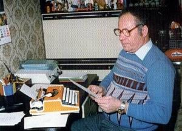
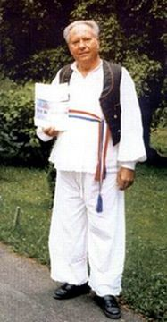
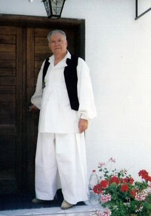
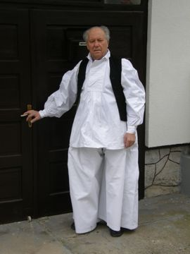
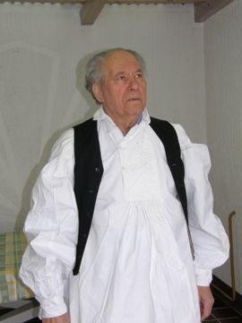
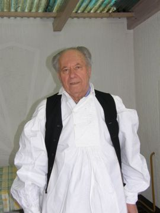
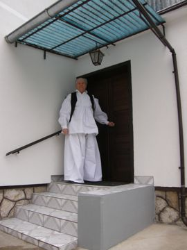
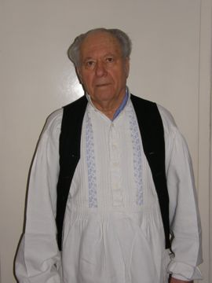
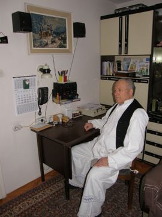
Knjige
Books
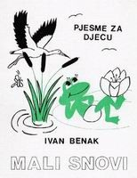
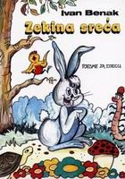
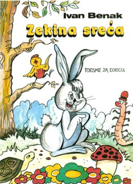
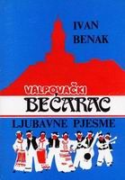
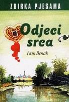
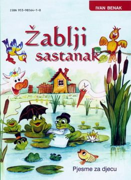
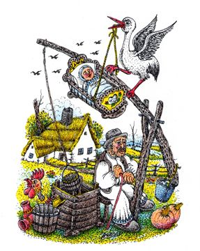
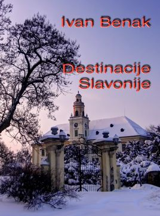
Ilustracije iz „Zekine sreće“
Illustrations from “Bunny's Luck”
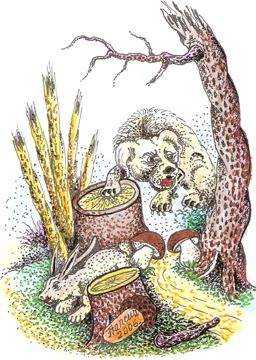
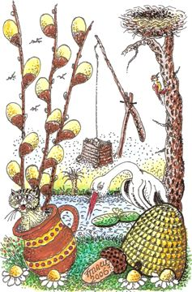
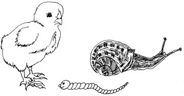
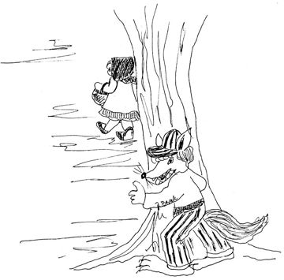
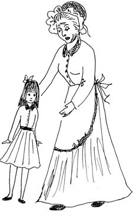
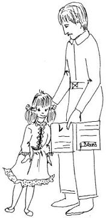
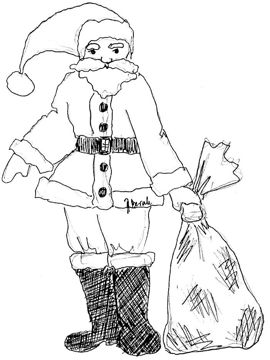
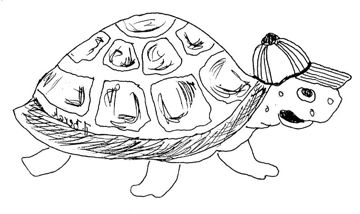
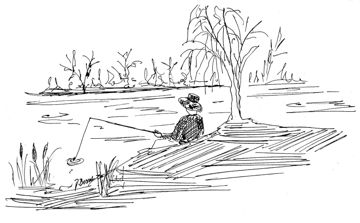
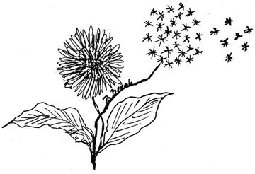
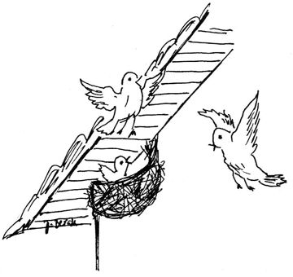
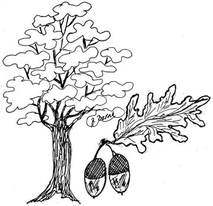
Priznanja i zahvalnice
Awards and certificates of thanks
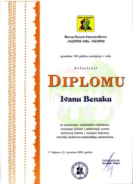
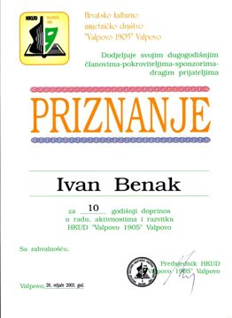
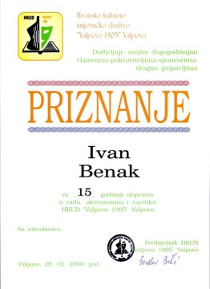
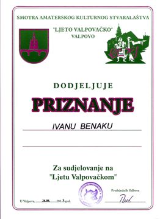
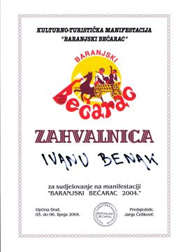
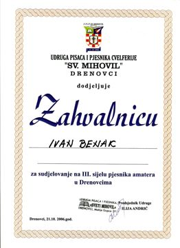
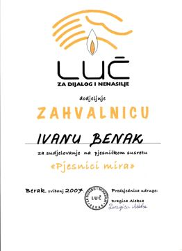
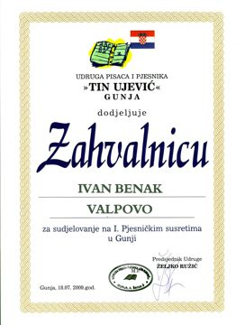
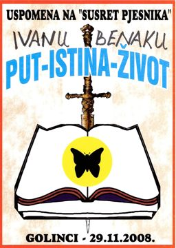
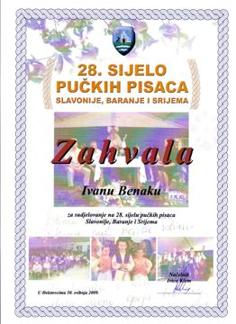
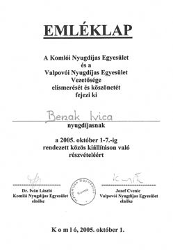
Druženja i nastupi
Gatherings and readings
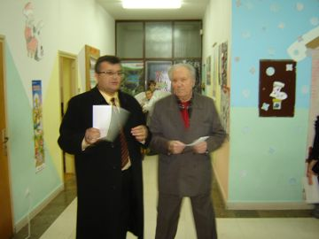
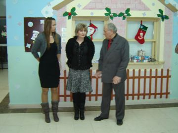
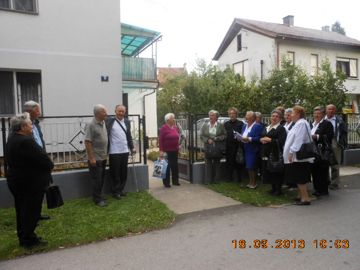
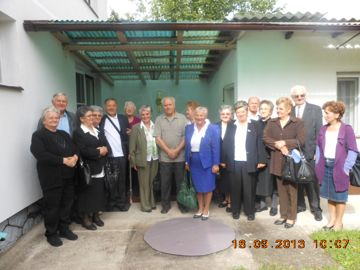
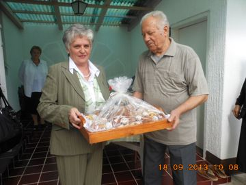
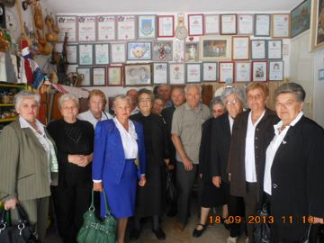
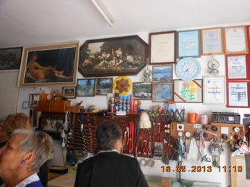
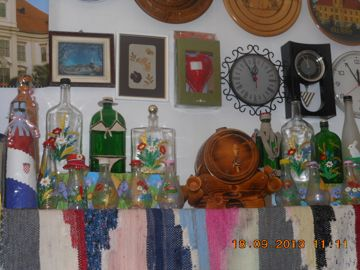
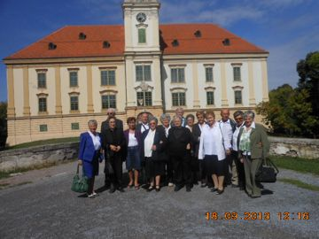
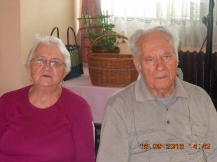